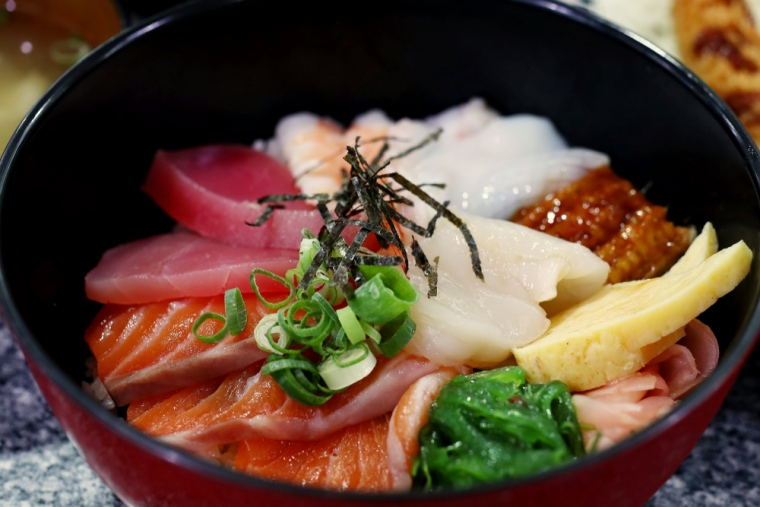
ชิราชิซูชิ
ข้าวซูชิที่โรยหน้าด้วยปลาดิบและของทะเล
อ่านเพิ่มเติม
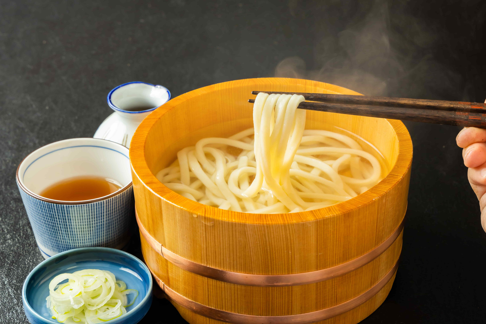
อุด้ง
เส้นหนาทำจากแป้งสาลี กินกับน้ำซุปดาชิ
อ่านเพิ่มเติม
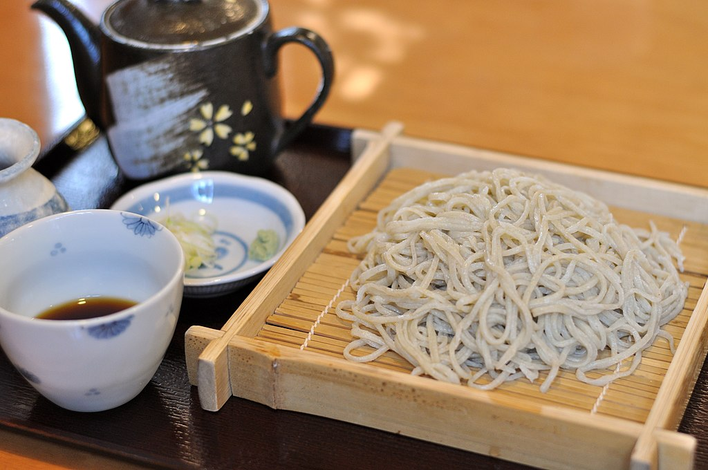
โซบะ
เส้นบางทำจากแป้งบัควีท กินได้ทั้งร้อนและเย็น
อ่านเพิ่มเติม
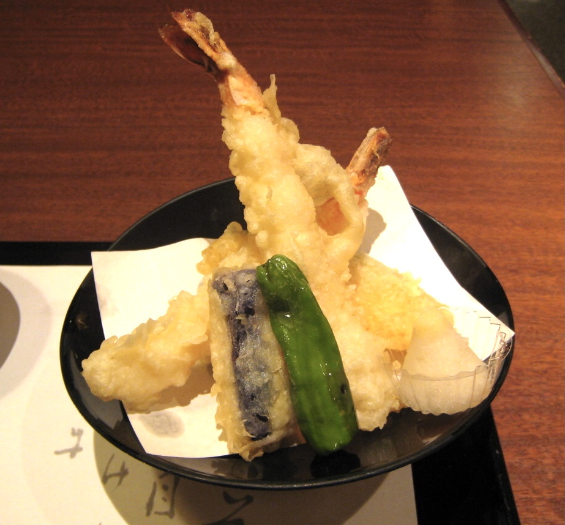
เท็มปุระ
อาหารทะเลหรือผักชุบแป้งทอด เช่น กุ้งเท็มปุระ ปลา ผักทอด
อ่านเพิ่มเติม
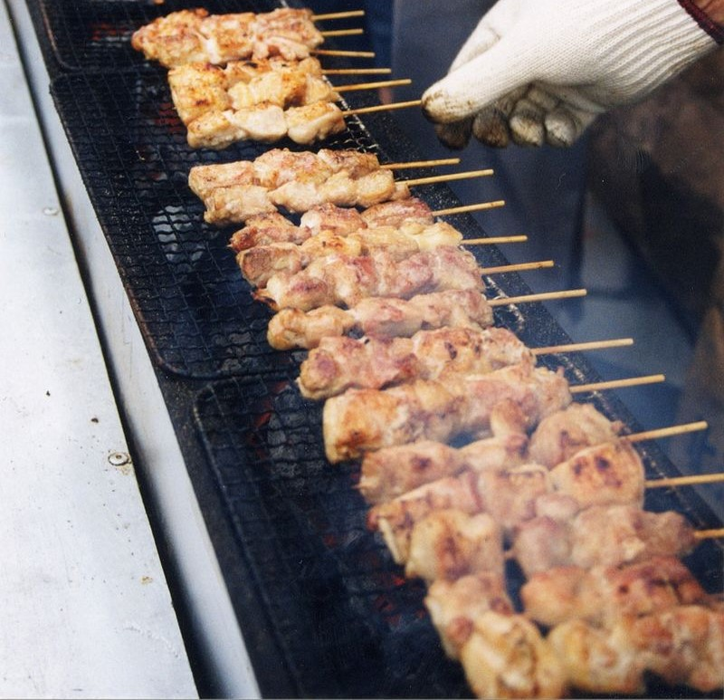
ยากิโทริ
ไก่ย่างเสียบไม้ ปรุงรสด้วยเกลือหรือซอสเทริยากิ
อ่านเพิ่มเติม
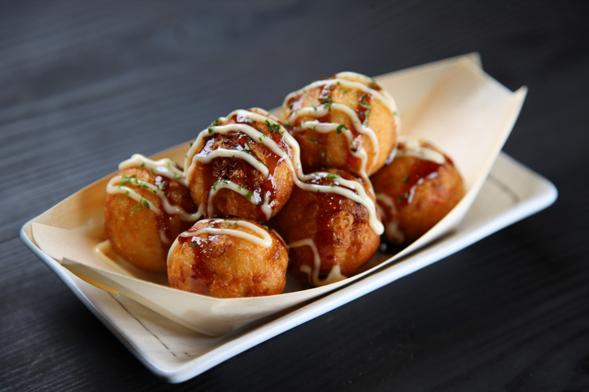
ทาโกะยากิ
ขนมครกญี่ปุ่น ไส้ปลาหมึก โรยซอสและปลาแห้ง
อ่านเพิ่มเติม
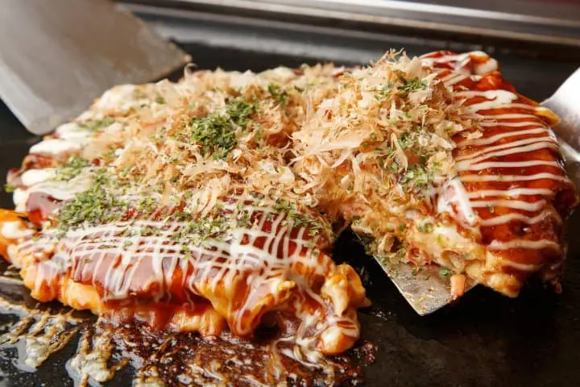
โอโคโนมิยากิ
พิซซ่าญี่ปุ่นหรือแพนเค้กคาว ใส่กะหล่ำปลี แป้ง ไข่ และเนื้อสัตว์
อ่านเพิ่มเติม
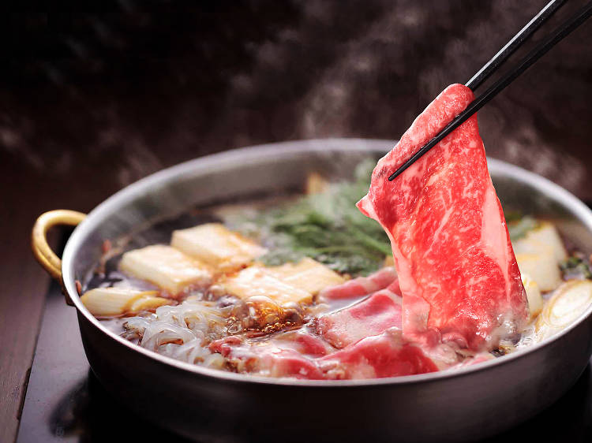
ชาบูชาบู
เนื้อสัตว์และผักต้มในน้ำซุป กินกับน้ำจิ้มงา
อ่านเพิ่มเติม
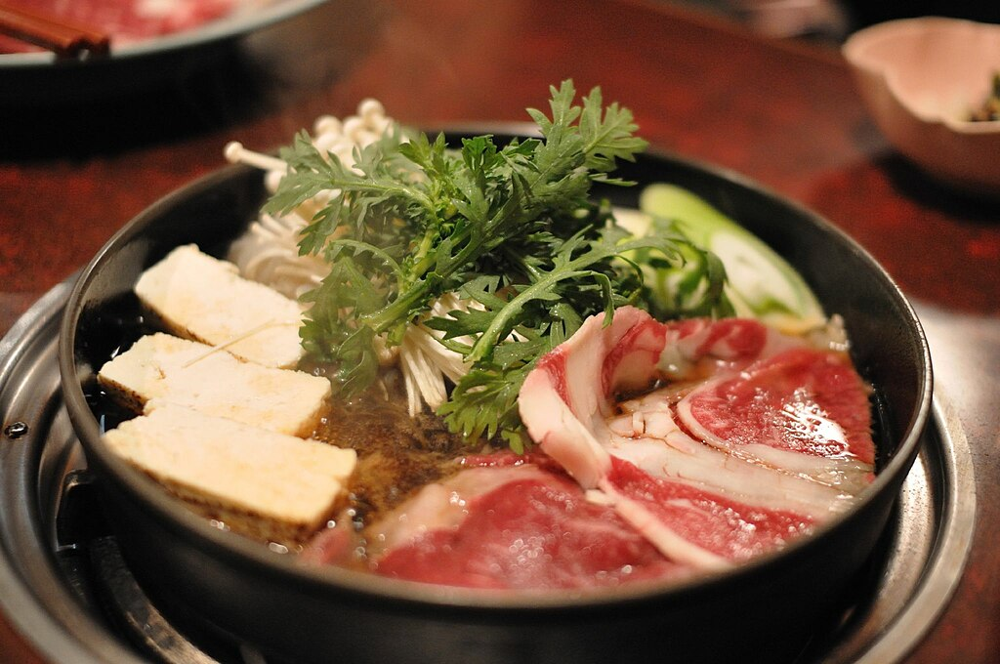
สุกี้ยากี้
เนื้อสัตว์ ผัก และเต้าหู้ต้มในซอสหวาน
อ่านเพิ่มเติม
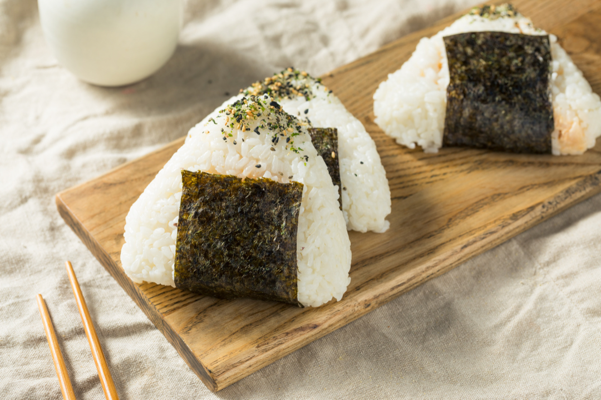
โอนิกิริ
ข้าวปั้นสามเหลี่ยมห่อสาหร่าย
อ่านเพิ่มเติม
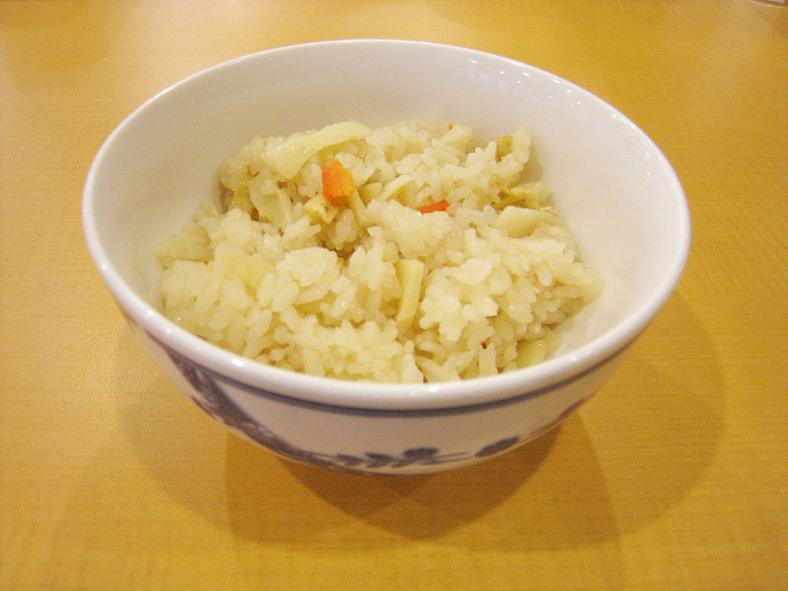
ทาคิโคมิโกฮัง
ข้าวหุงรวมกับวัตถุดิบอื่นๆ
อ่านเพิ่มเติม
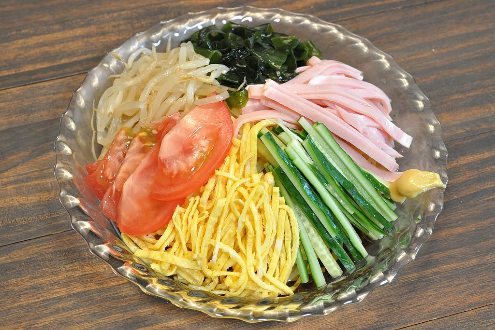
ฮิยาชิจูกะ
อาหารจากเส้นของญี่ปุ่น ที่ใช้บะหมี่จีนต้มและแช่เย็นลงในน้ำเย็น เส้นบะหมี่ราดด้วยส่วนผสมหลากสีสัน
อ่านเพิ่มเติม